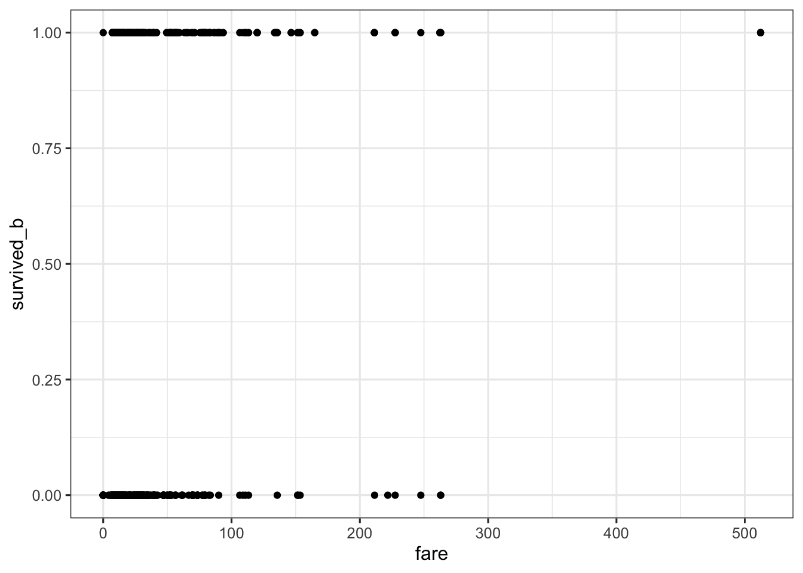
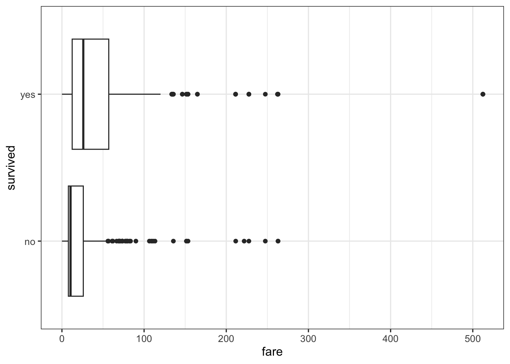
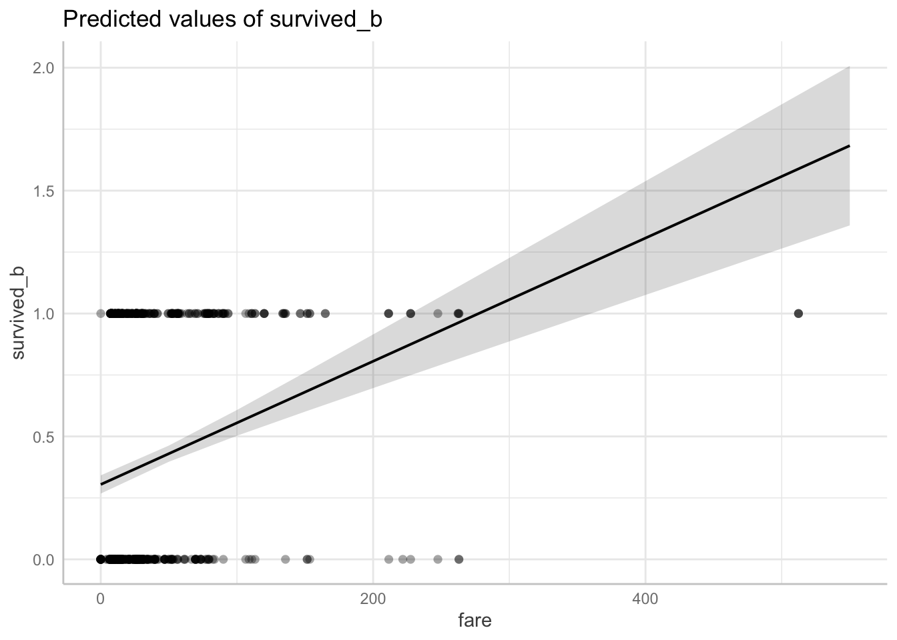
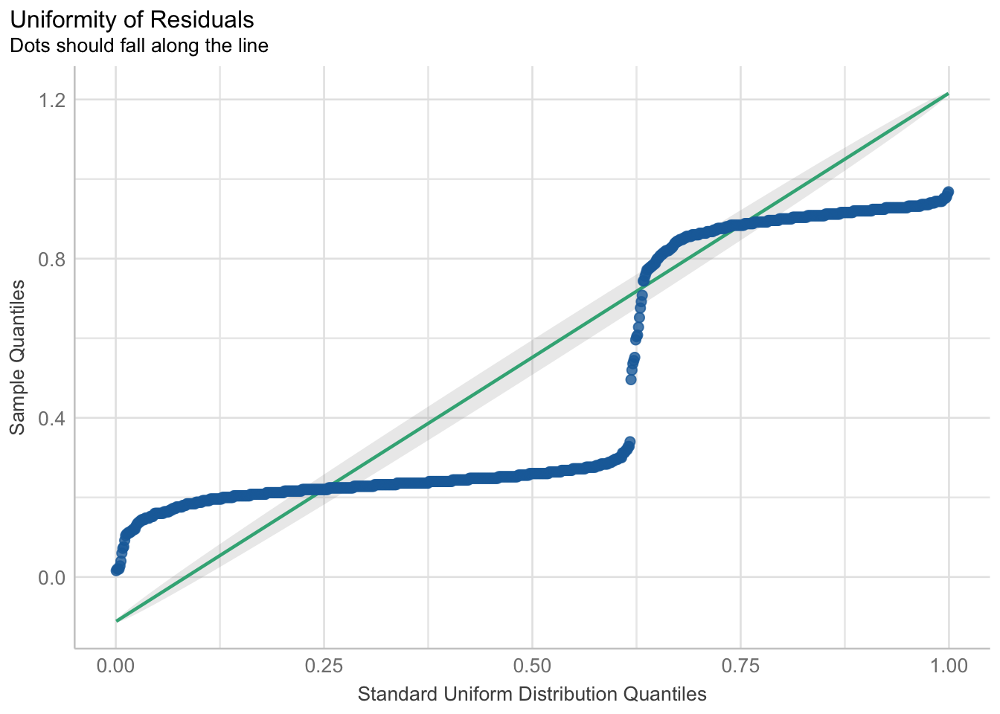

We start our first look at GLMs with binary regression. Here, we consider when binary regression, specifically logistic regression, is more appropriate than a regular (general linear) regression. We will also fit toy data and interpret the results.
3.1 Why Binary Regression?
When the outcome is a binary variable, or when there are only two possible outcomes, there are two essential problems with using the general linear model (e.g., the regular lm() function) . The first essential problem is due to the non-normal shape of the residuals. The second essential problem is that the outcome variable is not continuous and normally distributed. Both problems contribute to general linear models being biased and making impossible predictions.
Binary regression is a general term that encompasses specific models such as logistic regression and probit regression, and is a way to analyze these kinds of two-outcome data and hold these assumptions more true. We will focus on logistic regression in this module.
Terms
Binary Regression: A general term for models for when the outcome variable has only two possible outcomes.
Logistic Regression: A specific binary regression model which uses the logistic function as the link function.
Probit Regression: A specific binary regression model which uses the probit function as the link function.
Link Function: A function that transforms the outcome variable into a continuous and unbounded variable. It is a key aspect of generalized linear models.
3.1.1 Shape of Residuals
The general linear model assumes that residuals, or the differences between the observed and predicted values of data, are normally distributed. If the residuals are not normally distributed, the model will not make valid inferences or predictions.
3.1.2 Continuous and Normally Distributed Outcome
Since the outcome variable is binary, a quick histogram plot will show that it is not continuous (i.e., it is discrete). This is a scourge for the general linear model since it assumes continuous and normally distributed outcomes, and it will predict both intermediate states/values between the two possible outcomes and states/values above and below the two possible outcomes. For example, if 0 = Alive, and 1 = Dead, then the general linear model may predict a value between 0 and 1 (somewhere between alive and dead), or values below 0 and above 1 (so less alive and more dead?).
Therefore, to model a binary outcome using the machinery of linear modeling, we need to transform the outcome variable to a continuous and normally distributed outcome. We do that with what’s called a link function. In other words, the link function will take the binary outcome variable and transform it to a continuous and normally distributed outcome variable. By using a link function, we move from the general linear model to a generalized linear model. See more about link functions in the next section.
Before we fit our first binary regression, let’s take a look at what is actually happening and why the generalized linear model is similar, but different, to the general linear model.
3.2 Comparing Simple Regression to Simple Binary Regression
In simple regression, we are predicting the outcome (\(y_{{i}}\)) with a linear (additive) combination of an intercept (\(\beta_0\)) and one predictor variable (\(x\)).
\[ y_{\hat{i}} = \beta_0 + \beta_1 x \] In simple binary regression, we are still predicting an outcome with a linear (additive) combination of intercept and one predictor variable. We use the term “simple” only because we have one predictor variable in this case.
\[ \eta_{i} = \beta_0 + \beta_1 x \]
Note that the linearly additive feature that both simple regression and simple binary regression share is what makes these models related and interpretable.
The main difference is why, in simple binary regression, did the outcome variable change from \(y_{{i}}\) to \(\eta_{i}\)? Because in binary regression, we are no longer predicting the binary outcome event (e.g., “yes/no”), but the probability of the binary event occurring. This means that \(\eta_{i}\) is a probability that is bounded between 0 (“no” event) and 1 (“yes” event).
The next section will relate \(y_{\hat{i}}\) to \(\eta_{i}\).
3.2.1 Link function: logit
We need to make a connection between the probability of an event (\(\eta_{i}\)) to an event outcome (\(y_{{i}}\)). This is possible in this way:
The outcome \(y_{{i}}\) for i = 1,…,\(n\) events takes values zero or one with the probability of a 1 = \(p_i\)
In other words, \(P(Y_i = 1)\) = \(p_i\), or P is the probabilty of a 1 (e.g., “yes” happening).
That is all just setup to define \(\eta_{i}\).
\(\eta_{i}= g(p_i)\)
The variable \(g\) is our “link function”. It is a function that transforms a probability (\(p_i\)) into our \(\eta_{i}\), which is the outcome we are trying to find in binary regression (i.e., the probabilty of an event occuring.)
In binary regression, our \(g\) is the “logit function”, which is defined as:
\[ \eta = log(p/(1-p)) \] or, equivalently,
\[ p = e^\eta/ (1 + e^\eta) \]
When we use the logit link function with a linear predictor, we now can call this “logistic regression”.
Takeaway: Link Functions
When we use GLMs, we will be using many different link functions depending on the data. In the case of binary/logistic regression, all this function is trying to do is relate our linear predictors to a response outcome that is continuous and between some bounds (like 0 and 1). This is because if we did not do this, we are using the linear predictors to predictor some value that is continuous when it is not technically continuous and out of bounds (so, when an event “yes” = 1, then the model will spit out a value like 1.53, which is not possible). We also find that when using the appropriate link function, other problems, like the shape of residuals, also gets fixed!
3.3 Data Demonstration
The data for this chapter consists of some records of passengers on the Titanic. The question we will ask and answer with binary regression is if the amount of fare contributed in some way to the survival of passengers. Since survived is a binary outcome (yes or no), this relationship is best assessed with binary regression.
In addition to our usual packages (tidyverse, easystats, and ggeffects), we will also need to load DHARMa and qqplotr in order to make our plots for our binary regression models.
## Load packageslibrary(tidyverse)library(easystats)library(ggeffects)library(DHARMa)library(qqplotr)## Read in data from filetitanic_data <-read_csv("titanic.csv")titanic_data
# A tibble: 887 × 5
sex age class fare survived
<chr> <dbl> <chr> <dbl> <chr>
1 male 22 3rd 7.25 no
2 female 38 1st 71.3 yes
3 female 26 3rd 7.92 yes
4 female 35 1st 53.1 yes
5 male 35 3rd 8.05 no
6 male 27 3rd 8.46 no
7 male 54 1st 51.9 no
8 male 2 3rd 21.1 no
9 female 27 3rd 11.1 yes
10 female 14 2nd 30.1 yes
# ℹ 877 more rows
This data shows records for 877 passengers on the Titanic.
Here’s a table of our variables in this dataset:
Variable
Description
Values
Measurement
sex
Male or Female
Characters
Nominal
age
Age of Passenger
Double
Scale
class
Category of Passenger Accommodation
Characters
Nominal
fare
Cost of fare
Double
Scale
survived
“Yes” or “No” if survived
Characters
Nominal
3.5 Prepare Data / Exploratory Data Analysis
In order to use the survived variable in our analyses, we need to re-code the outcomes as integer numbers. Here, we will use the mutate() function from the dplyr package (which is a package that automatically loaded with tidyverse) to add a new column to our data which re-codes “Yes” = 1 and “No” = 0.
## Prepare the data for analysistitanic2 <- titanic_data |>mutate(survived_b =case_match( survived, "no"~0,"yes"~1 ) )titanic2 #print
# A tibble: 887 × 6
sex age class fare survived survived_b
<chr> <dbl> <chr> <dbl> <chr> <dbl>
1 male 22 3rd 7.25 no 0
2 female 38 1st 71.3 yes 1
3 female 26 3rd 7.92 yes 1
4 female 35 1st 53.1 yes 1
5 male 35 3rd 8.05 no 0
6 male 27 3rd 8.46 no 0
7 male 54 1st 51.9 no 0
8 male 2 3rd 21.1 no 0
9 female 27 3rd 11.1 yes 1
10 female 14 2nd 30.1 yes 1
# ℹ 877 more rows
Re-coding these strings/characters into discrete numbers is important for the model’s mathematics to work.
mutate() and data-wrangling
mutate() is a function from dplyr that adds a column to the dataframe (the object that holds the data). This isn’t the only way to accomplish our goal of re-coding survived, but it is a fairly elegant, easy, and straightforward way to do so. The trick is to remember that mutate() adds a column to the existing dataframe with the same number of rows as the existing dataframe.
Our choice of data-wrangling functions are open to reprisal because there are many ways in data analysis and programming to do the same thing.
3.5.1 Plotting a binary outcome
Like always, it is important to plot the data prior to fitting any model. Here, we consider if there is some sort of relationship between survived_b and fare.
ggplot(titanic2, aes(x = fare, y = survived_b)) +geom_point() + mytheme

ggplot(titanic2, aes(x = fare, y = survived)) +geom_boxplot() + mytheme

The boxplot helps clarify what the scatter plot can’t easily show: there seems to be some effect of fare on survival, such that the higher the fare, the more mass/points are in having survived the titanic. While this is plot is interesting, we will explore this relationship in our regression models.
4 Fitting the General Linear Model (Not Recommended)
Before we fit the binary regression, it would be worthwhile to try fitting the less appropriate (or downright wrong) regular general linear model. We’ll use our old friend lm() to assess the relationship betwen the outcome variable survived_b with the predictor variable fare.
As the results show, we have a significant effect of fare, such that a small amount of fare (0.00251 dollars) increases the chance of survival. However, it is worth nothing that just because regular lm() “worked”, it doesn’t mean that the model is a good model to use.
This is evident when we plot the predictions using the predict_response() function.
Data points may overlap. Use the `jitter` argument to add some amount of
random variation to the location of data points and avoid overplotting.

Notice that although the data points are only either 0 or 1 (binary), the regression line takes intermediate values between 0 and 1, and extreme values above and below 0 and 1! For example, if a passenger paid $100, then the outcome value would be ~0.55, which is halfway between alive and dead! We can’t have passengers somewhat between alive/dead, or more or less alive/dead!
If that wasn’t enough to deter one from using the general linear model for binary responses, taking a look at a plot of the residuals, using check_residuals()1, should be telling.
## Check residualscheck_residuals(fit1) |>plot() # looks bad

Yikes! As you can see, the dots do not fall along the line. Once this assumption of the uniformity/normality of residuals are not met, this is a clear sign that the model should not be so easily trusted.
So now, finally, we fit our first GLM.
5 Fitting the Binary Regression Model
5.1 Fitting our Binary Regression
When we fit our binary regression, we now will use the glm() funciton which is similar to lm(), but has one extra input argument. Notice the “family” input argument, which requires which “family of distributions” to use and which “link function” choice.
For binary regression, we supply the binomial distribution and the logit link function.
fit2 <-glm(formula = survived_b ~ fare, family =binomial(link ="logit"), data = titanic2)## Print parameters in logit (i.e., log-odds) unitsmodel_parameters(fit2) |>print_md()
Parameter
Log-Odds
SE
95% CI
z
p
(Intercept)
-0.93
0.10
(-1.12, -0.75)
-9.79
< .001
fare
0.02
2.23e-03
(0.01, 0.02)
6.77
< .001
5.1.1 Parameter Table Interpretation
As seen above, the parameter table output from a model fit with glm() looks very similar to parameter table outputs from models fit with lm(). But there is a big difference – in glm() models, we are no longer working in the same raw units!
This difference is apparent in the second column of the output table: “Log-Odds”. Because we fit a logistic regression with a logit function, the parameter values are in “log-odds” unit; it is no longer possible to consider fare in terms of dollar amounts. Technically, when fare is in log-odds units, we can only say:
For every one 1 unit increase in log-odds of fare is a 0.02 increase in the probability of surviving.
Although this is technically true, it isn’t at first clear what “1 unit increase in log-odds of fare” is. But before we completely abandon what log-odds unit can tells and tranform back into our original units (e.g., dollars), let’s see more what using logistic regression can show us.
5.1.2 Predicted Probability
A very useful part of about working with logistic regression is that our outcome variable is also in a transformed space (thanks to the logit function). Our outcome is now “the probability of survival_b”. We can see how this plays out when we plot the predicted probabilities using predict_response(). This function is especially helpful because it keeps the outcome variable in the transformed, continuous space, but transforms the predictors back to their raw units.
Again, the transformed outcome variable is the “probability of survived_b” (on the y-axis), so we can see that it is bounded between [0,100]. The logistic regression line also makes predictions between these bounds so we no longer have the model predicting unreasonable values/states. Lastly, we can now see how an increase in fare increases the probability of survival.
Critical Thinking
While the plot above looks very convincing that paying a fare over $400 seems to ensure 100% probability of survival, this model only has one predictor variable. There are a lot of other variables that are not accounted for. Certainly, we would need to consider other variables that may impact survival rates other than fare, and, at the very least, it would be quite surprising if only ’fare` ensured survival.
check_residuals() requires the package qqplotr to be installed.↩︎